Synthetic Object Detection
A PyTorch comparison of a custom ResNet18 detector and a fine-tuned YOLOv8n
131 / 200 held-out scenes where the class is right and the box clears IoU 0.5
0.575 mean IoU between predicted and true boxes
0.0015 best validation loss, reached at epoch 16
0.995 YOLOv8n native mAP50-95 on the same files
The custom detector reaches a validation loss of 0.0015 and still misses the box on roughly a third of the test set. That gap between a converged training curve and a correct detection is what this report is about.
Overview
A detector must answer two questions: what is in the image, and where is it? This experiment separates those questions in a custom PyTorch model, then tests it against a pretrained YOLOv8n detector fine-tuned on the same images.
The task is deliberately controlled. A transparent character is placed at a known location on a cluttered background, so its class and bounding box are available without manual annotation. The custom detector correctly identifies and localizes 131 of 200 test objects at an IoU threshold of 0.5. YOLO reaches 0.995 native mAP50–95 on that same test split. These are different measures, but together they show the practical gap between the custom baseline and a pretrained detector on this task. The high YOLO score must also be read in the context of the constrained synthetic data.
The executed notebook supplies the code, figures and measurements discussed here. The aim is to follow a complete example from image construction to a detection decision, and understand why good-looking training curves do not necessarily imply accurate boxes.
Building a task with exact labels
The three classes are Waldo, Wenda and Wizard Whitebeard. Their prepared PNGs retain transparency and have fixed dimensions of 68 × 160, 55 × 160 and 71 × 160 pixels respectively. They are composited onto 640 × 640 images from a reviewed pool of 22 doodle backgrounds.
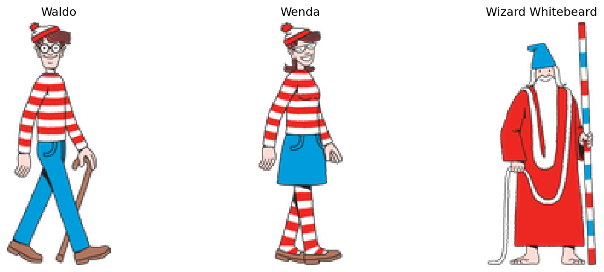
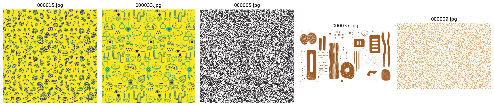
The cut-outs come from Candlewick Press character sheets, with illustrations by Martin Handford. The source PDF, preparation details and background source records are retained in the data documentation. Wenda replaces the unavailable Wilma asset from the earlier notebook.
Compositing creates the supervision
Placement is the supervision. Because the generator chooses the position, the box is recorded rather than estimated, so every label is exact by construction.
A PNG has an alpha channel as well as its red, green and blue channels. Alpha describes opacity: zero lets the background show through, one makes the foreground fully visible, and intermediate values blend the two. For each colour channel, the compositor calculates
\[ I_{\text{scene}}=\alpha I_{\text{character}}+(1-\alpha)I_{\text{background}}. \]
Before placing the character, the generator crops away transparent margins. Otherwise the label would describe the PNG canvas rather than the extent of the visible cut-out. It then selects a background, chooses one of the three characters and samples a position where the cut-out fits, with a small buffer from the image edges. Character size stays fixed in the saved dataset.
This process provides supervision automatically. We know which character was selected and exactly where its cropped image was placed. The bounding box is the rectangle enclosing that cut-out, not a pixel-by-pixel segmentation mask. Transparent space inside the rectangle still belongs to the box.
Turning placement into a target
Each saved scene contains exactly one character. Given its upper-left position \((x,y)\) and size \((w,h)\), the normalized label is
\[ [c_x,c_y,b_w,b_h] =\left[\frac{x+w/2}{640},\frac{y+h/2}{640},\frac{w}{640},\frac{h}{640}\right]. \]
The text label adds the class ID before those four coordinates. The same image and label files feed both models.
For a concrete example, place the 55 × 160 Wenda cut-out at pixel position \((100,200)\). Its centre is \((127.5,280)\), so the saved row is
1 0.19921875 0.4375 0.0859375 0.25
│ │ │ │ │
│ │ │ │ └─ height 160 / 640
│ │ │ └────────── width 55 / 640
│ │ └───────────────────── centre-y 280 / 640
│ └──────────────────────────────── centre-x 127.5 / 640
└───────────────────────────────────────── class 1 = WendaEvery value after the class is a division by the image dimension, which is what makes the row independent of resolution: a centre-x of 0.5 is halfway across the image whether that image is 640 pixels wide or 224. Nothing about the character’s identity is encoded in the four coordinates, and nothing about its position is encoded in the class. The two heads of the detector learn these separately for exactly that reason.
The placement above is chosen to show the arithmetic; the saved dataset uses positions drawn at random.
To draw the rectangle again, reverse the calculation: \(x_1=(c_x-b_w/2)W\), \(y_1=(c_y-b_h/2)H\), \(x_2=(c_x+b_w/2)W\) and \(y_2=(c_y+b_h/2)H\). Keeping the centre format and corner format distinct is essential: the network predicts the former, while plotting and overlap calculations use the latter.
What belongs in each split
Training images supply gradients that update model weights. Validation images help select a checkpoint and adjust the learning rate. Test images assess the selected model after training. Using the test result to choose a checkpoint would make it part of model selection rather than an independent assessment.
| Split | Images | Waldo | Wenda | Wizard Whitebeard |
|---|---|---|---|---|
| Training | 5,000 | 1,637 | 1,707 | 1,656 |
| Validation | 1,000 | 342 | 333 | 325 |
| Test | 200 | 67 | 71 | 62 |
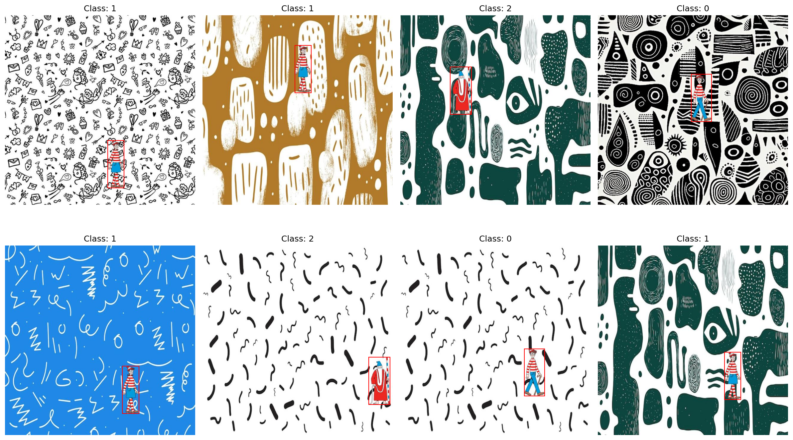
The dataset is a frozen archive with hashes for all image and label files. Local and Colab runs download and verify this archive instead of generating a new sample. The Drive export’s dataset archive matches the published checksum.
The split holds out composites, not source artwork. All three splits draw on the same characters and the same background pool, so what the test set measures is generalization to new placements of familiar visual material. That is the question this dataset is built to answer, and the scores below should be read as answering it.
From image files to training batches
The PyTorch dataset pairs each image filename with its text label. It returns an RGB image tensor and one label row. Before returning the sample, it checks that the class is valid, the coordinates are finite, the box has positive area and the label fits inside the image. An invalid label should stop the run: silently treating it as an empty image would change the task being learned.
Image normalization and box normalization are different
ToTensor() converts byte-valued image pixels into floating-point values in \([0,1]\) and arranges the channels first. The ImageNet-pretrained backbone then receives the channel normalization used by this notebook:
transforms.Normalize(
mean=[0.485, 0.456, 0.406],
std=[0.229, 0.224, 0.225]
)For each channel, this subtracts its mean and divides by its standard deviation. Those image values can become negative. The bounding-box targets are not passed through this transform: their normalization is geometric, dividing coordinates by image width or height. Confusing these two operations would give the model the wrong targets.
When displaying an image, the notebook reverses the channel normalization using \(I=I_{\text{normalized}}\sigma+\mu\). This is why the visual checks can show recognizable colours even though the model receives standardized inputs.
An augmentation must move the label too
Training applies a horizontal flip with probability 0.5 and a rotation sampled between −10° and +10°. A flipped image with an unchanged box would teach the model to predict a location where the character no longer appears.
For a horizontal flip, the normalized centre transforms as \(c_x'=1-c_x\); width, height and centre-y stay unchanged. The notebook performs both operations together:
if random.random() < .5:
image = image.transpose(Image.Transpose.FLIP_LEFT_RIGHT)
labels[:,1] = 1-labels[:,1]Rotation is less direct. The code converts the box into four pixel-space corners, rotates them about the image centre using the same angle as the image, then takes their minimum and maximum coordinates. That gives an axis-aligned rectangle enclosing the rotated box; its boundaries are clipped to the image and converted back to normalized centre coordinates. The new rectangle can contain more background than the old one. It encloses a rotated rectangle rather than tracing the character’s silhouette.
Validation and test images receive no random geometric augmentation. They retain their saved labels and use only tensor conversion and channel normalization.
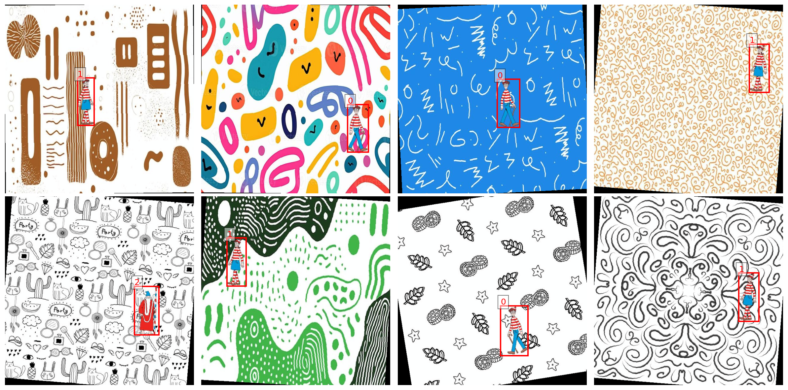
Reading tensor shapes
The dataloader stacks samples so the model can process several images in one forward pass. Training shuffles their order; validation and test loading do not. With a full training batch of 16, the important shapes are:
| Tensor | Shape | Meaning |
|---|---|---|
| Images | 16 × 3 × 640 × 640 |
Batch, RGB channels, height, width |
| Labels | 16 × 1 × 5 |
One row per image: class and four coordinates |
| Class targets after unpacking | 16 |
One integer class ID per image |
| Box targets after unpacking | 16 × 4 |
One normalized box per image |
The separate test-evaluation cells use batches of eight. Changing batch size does not change how many test images are evaluated. The last batch can be smaller, and epoch loss is weighted by the number of images rather than treating a short batch as equal to a full one.
A custom detector with two heads
The custom model uses an ImageNet-pretrained ResNet18 feature extractor. Its final spatial feature map is pooled to a 3 × 3 grid, flattened to 4,608 features, and passed to separate classification and bounding-box heads.
The backbone’s original image-classification layer is removed. Its convolutional features are reused because patterns learned for ImageNet classification can provide a useful starting point for this smaller task. During custom training, the backbone is fine-tuned along with the new heads. It is not merely a frozen feature calculator.
self.pool_grid = pool_grid
self.global_pool = nn.AdaptiveAvgPool2d((pool_grid, pool_grid))
feature_dim = feature_dim * pool_grid * pool_gridThis excerpt comes from the executed notebook. A global 1 × 1 average removes the feature map’s spatial arrangement; retaining nine regions gives the heads coarse location information. POOL_GRID = 1 remains available to reproduce the earlier pooling architecture. This report contains one completed 3 × 3 run, not a controlled pooling ablation. An improvement caused specifically by the grid would require matched runs of both settings.
The classification branch uses a 256-unit hidden layer with ReLU, batch normalization and dropout before predicting three logits. The regression branch uses a 256-unit hidden layer with ReLU and batch normalization before predicting four coordinates. Its outputs are unconstrained: training penalizes inaccurate coordinates rather than forcing them into \([0,1]\).
ReLU introduces a nonlinearity between the two linear layers. Without it, two successive linear maps would still be one linear map. Batch normalization uses batch statistics during training and stored running statistics during evaluation. Dropout randomly removes a fraction of the classification branch’s activations while training; it is disabled during evaluation. These behaviours are why switching between model.train() and model.eval() matters even when the weight values have not changed.
The classifier emits logits, not probabilities. argmax selects the most likely class directly from those scores. For confidence-ranked evaluation, softmax converts them into values summing to one. The regression head has no sigmoid because the retained architecture directly learns coordinates from the loss. Predictions with nonfinite coordinates or nonpositive box dimensions receive zero IoU in evaluation.
The computational path is compact:
| Stage | Representation | Purpose |
|---|---|---|
| ResNet18 feature extractor | 512 spatial feature channels | Encode image patterns |
| Adaptive average pool | 512 × 3 × 3 | Retain coarse spatial arrangement |
| Flatten | 4,608 features | Supply both prediction heads |
| Classification head | 3 logits | Select the character class |
| Box regression head | 4 coordinates | Locate the character |
ResNet18 and VGG16 variants are inspected in the notebook. Only the ResNet18 custom detector is trained for the results here. It has 13,539,143 parameters; the VGG16 inspection is not a second trained baseline.
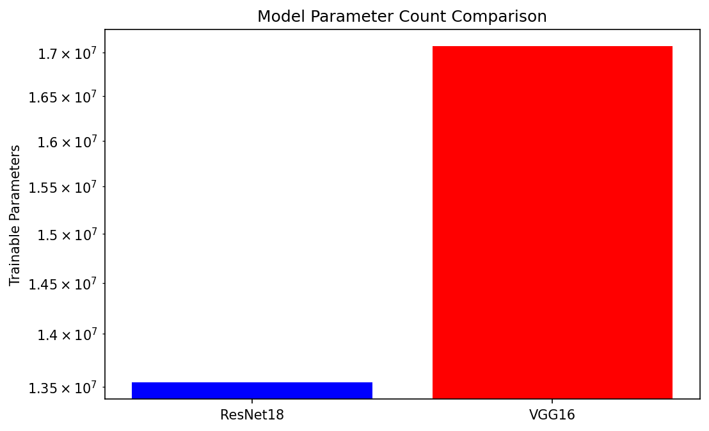
Teaching both heads with one loss
The model has two kinds of target. Class identity is categorical; box position and size are continuous. The loss combines classification and localization:
\[ \mathcal L = \mathcal L_{\mathrm{cross\ entropy}} + 5\,\mathcal L_{\mathrm{Smooth\ L1}}. \]
Cross-entropy consumes the class logits. Smooth L1 operates on normalized box coordinates. A low coordinate loss is useful, but it does not directly optimize IoU: for a narrow character, a small horizontal displacement can substantially reduce box overlap.
Cross-entropy penalizes assigning low probability to the correct class. It uses the logits directly, so the training code must not apply softmax before passing them to CrossEntropyLoss. Smooth L1 is quadratic near zero error and linear for larger errors. With its default transition at one, its coordinate penalty for residual \(r\) is
\[ \ell(r)=\begin{cases} \tfrac12r^2,& |r|<1,\\ |r|-\tfrac12,& |r|\geq1. \end{cases} \]
The weight of five multiplies the box term; it is not five times the IoU or five extra training passes. It changes the relative contribution of the two objectives to the gradients. The implementation returns the total as well as the individual components:
class_loss = self.classification_loss(pred_classes, true_classes)
bbox_loss = self.bbox_loss(pred_bboxes, true_bboxes)
total_loss = self.lambda_cls * class_loss + self.lambda_bbox * bbox_loss
return total_loss, class_loss, bbox_lossBoth heads feed gradients back through their shared features. A parameter update can therefore affect both class recognition and localization. The reported training and validation curves use this combined loss; neither curve is an accuracy percentage.
Why a small coordinate error can still miss the object
Consider two boxes with the correct width and height, aligned vertically but offset horizontally by \(d\) pixels. For \(0 \leq d < w\),
\[ \operatorname{IoU}=\frac{(w-d)h}{(w+d)h}=\frac{w-d}{w+d}. \]
An IoU of 0.5 corresponds to \(d=w/3\). For the 55-pixel-wide Wenda cut-out, that is only 18.3 pixels, or 0.029 in normalized image coordinates. This calculation is an illustration, not a measurement of a particular prediction. It explains why a small regression loss can coexist with a substantial number of failed detections, especially for narrow targets.
Training and selecting checkpoints
| Setting | Custom ResNet18 | YOLOv8n |
|---|---|---|
| Image size | 640 × 640 | 640 × 640 |
| Batch size | 16 | 16 |
| Training completed | 20 epochs | 100 epochs |
| Optimization | Adam, initial learning rate 0.0001 | Ultralytics automatic optimizer selection |
| Augmentation | Paired horizontal flip and rotation up to ±10° | Native YOLO augmentation, including mosaic |
| Selection | Lowest validation composite loss | Native YOLO validation fitness |
| Execution | CUDA mixed precision | CUDA mixed precision |
Custom image transforms update boxes alongside pixels. YOLO’s mosaic can place multiple saved scenes into one augmented training image, even though each stored scene contains only one target. The training budgets and augmentation policies differ, so this is a practical reference comparison rather than a controlled test of architecture alone.
What happens in one training step
Each batch passes through the backbone and both heads. The class and box predictions are compared with their targets, and the total loss supplies the gradients used to update the parameters. The notebook’s central update is:
optimizer.zero_grad()
with torch.amp.autocast('cuda',enabled=USE_AMP):
class_preds, bbox_preds = model(images)
loss, _, _ = criterion(class_preds, labels, bbox_preds, boxes)
if not torch.isfinite(loss): raise FloatingPointError('Nonfinite training loss')
scaler.scale(loss).backward()
scaler.step(optimizer)
scaler.update()zero_grad() clears gradients left by the previous batch. The forward pass produces predictions, and backward() computes how changing each trainable parameter would change the loss. Adam uses those gradients together with its running estimates of their first and second moments to update the model.
Automatic mixed precision lets suitable operations use lower precision on the GPU. Gradient scaling helps protect small gradient values from underflow; the scaler also coordinates whether an optimizer step is safe. It is a numerical execution technique, not a different learning objective. The run used a Tesla T4 and retained the same classification and box losses.
An epoch is one pass through all training samples. The notebook sums each batch’s mean loss multiplied by its image count, then divides by the total number of training images. Validation follows with model.eval() and no gradient updates. Its purpose is to measure the current model on examples that did not contribute to that epoch’s optimization.
Learning-rate changes and early stopping solve different problems
A learning-rate scheduler changes the size of future optimization steps. Early stopping decides whether to take any more steps at all. In this run, ReduceLROnPlateau monitors validation loss with patience two, while the separate stopping rule allows five consecutive epochs without a new best validation loss. A scheduler reduction can give optimization another chance at a smaller learning rate before early stopping ends the run.
The custom learning-rate scheduler reduces the rate when validation loss plateaus. Early stopping allows five consecutive epochs without improvement. The lowest validation loss, 0.001184 at epoch 16, selects the evaluated checkpoint; training continues through epoch 20.
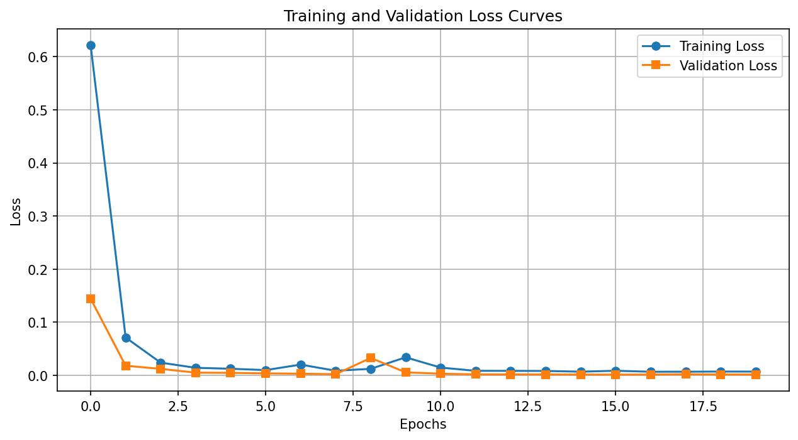
Validation loss falls sharply at the start, spikes at epoch 9, then recovers. Its lowest value occurs later than the spike. The loss curve alone does not prove that every object is localized well; the held-out box metrics below provide that check.
Checkpoints, metrics and figures are written to Google Drive. Custom resume files include optimizer, scheduler, mixed-precision and random states. The completed notebook restores the custom run after epoch 20 and resumes an interrupted YOLO run before reaching epoch 100. The YOLO CSV contains every epoch from 1 to 100. Its resumed-session timing is not treated as the duration of an uninterrupted experiment.
The best checkpoint and the latest checkpoint answer different questions. The best contains the weights selected for evaluation. The latest must also retain Adam’s state, the scheduler, mixed-precision scaler, epoch, history and random states to continue training coherently. Reloading only weights would restart parts of the optimization process even if the next epoch number looked correct. Persistence matters because an in-memory model does not survive a disconnected runtime.
What changes when YOLO takes over
The custom model compresses each image into one shared feature vector and always returns exactly one class and one box. YOLO uses a pretrained detection network that predicts candidates from spatial feature maps at multiple resolutions. Its native prediction pipeline can return a variable number of detections and filters overlapping candidates through postprocessing. That gives it a different output contract from the custom one-box model.
For training, the dataset YAML supplies the train, validation and test paths and maps class IDs to the same three names. YOLO reads the saved images and normalized labels directly. It does not consume the custom PyTorch dataloader’s already-normalized tensors; its own pipeline handles image preparation and augmentation.
The YOLO curves separate box loss, classification loss and distribution focal loss (DFL). The native loss implementation uses DFL to support prediction of box-boundary distances as distributions over bins. These terms belong to a different objective from the custom cross-entropy-plus-Smooth-L1 loss. Their absolute magnitudes are therefore not a common performance scale. A custom loss of 0.001 and a YOLO loss of 0.06 cannot tell us which model detects better.
Mosaic is another substantive difference: several source images can be combined into one training input. The detector learns from multiple objects at varying placements and scales in those augmented inputs. The held-out test evaluation still uses the original single-object composites. No mosaic image is being counted as a new test example.
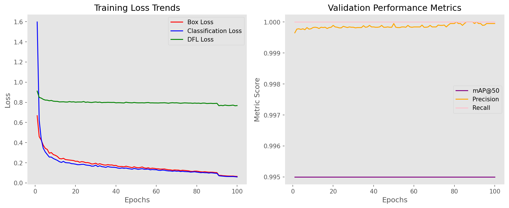
Low loss, wrong boxes
Custom detector
A prediction succeeds when its class matches the target and its box has IoU ≥ 0.5. The model always emits one prediction, and each image has one target. Consequently precision and recall have the same denominator and agree.
To compute IoU, the evaluator converts both boxes from centres and sizes to corners, finds their intersection, and divides its area by their union:
\[ \operatorname{IoU}(B_p,B_t) =\frac{|B_p\cap B_t|}{|B_p|+|B_t|-|B_p\cap B_t|}. \]
Nonoverlapping boxes have IoU zero; identical boxes have IoU one. A prediction with the right class but IoU 0.49 fails this experiment’s criterion, as does a perfectly placed box carrying the wrong class. A failed prediction counts against precision and leaves its target unmatched for recall.
For this specific one-target, one-prediction setup, \(P=TP/200\), \(R=TP/200\) and \(F_1=2PR/(P+R)\). The three values coincide. This is a property of the evaluation contract, not a general rule for detectors. Also, class ID 0 means Waldo. It must not be discarded as a padding value; padding is recognized by zero box area.
| Metric | Test result |
|---|---|
| Images evaluated | 200 |
| Correct class-and-box detections | 131 / 200 |
| Precision / recall / F1 | 0.6550 / 0.6550 / 0.6550 |
| Mean IoU, independent of predicted class | 0.5746 |
| Custom all-points mAP@0.5 | 0.5236 |
| Mean forward time per image, final evaluation pass | 6.15 ms |
Mean IoU assesses localization without requiring the class to be correct. Custom AP ranks predictions by class confidence and integrates the precision envelope over recall. It is not the same AP implementation as YOLO’s native 101-point interpolated metric, so these AP values should not be subtracted as if they came from a common evaluator.
AP adds a question that the fixed-threshold success count does not answer: does confidence rank correct detections above incorrect ones? Within a class, imagine accepting predictions from highest confidence downward. At each rank, cumulative true and false positives define precision and recall. The custom evaluator takes a monotonic precision envelope and sums its area over changes in recall, then averages AP over the classes present in the labels. Its confidence is the largest softmax class probability, not a separately learned estimate of box quality. A confident class prediction can still have a poorly placed box.
The 6.15 ms measurement synchronizes CUDA around the forward pass, includes the first batch and excludes loading and preprocessing. A preceding evaluation in the same notebook reports 6.86 ms with identical accuracy metrics. The exported JSON records the final pass. This is an observed model timing on a T4, not an end-to-end latency benchmark.
What the boxes reveal
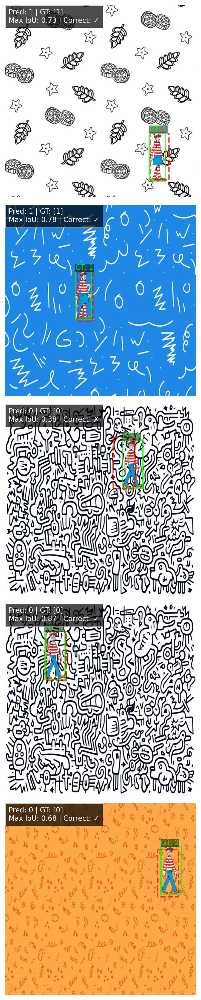
The third example predicts the correct class, Waldo, but has IoU 0.38 and fails the detection criterion. The fourth example uses similarly dense black-and-white clutter and reaches IoU 0.87. Together these show that class recognition alone is insufficient, and that difficulty varies within the same visual style: the same dense monochrome clutter produced both a failure and one of the better boxes. Five examples put a face on the aggregate; the 200-image score remains the measurement.
YOLO reference
The selected YOLO model is evaluated on all 200 test images, separately from the validation log used during training.
| Native YOLO metric | Test result |
|---|---|
| Precision | 1.0000 |
| Recall | 1.0000 |
| mAP50 | 0.9950 |
| mAP50–95 | 0.9950 |
All three classes have reported precision and recall of 1.0 on this test set. mAP50 evaluates overlap at IoU 0.5. mAP50–95 averages AP across the ten thresholds 0.50, 0.55, and so on through 0.95, progressively demanding tighter localization. Precision and recall describe an operating point; AP summarizes behaviour across confidence ranks. The versioned evaluator defines the interpolation used for these native scores.
The 0.995 AP value should not be translated into one missed object: it is an area-under-curve result from the native evaluator, not a count of correct images or the average IoU.
Two of YOLO’s own diagnostic plots show where that number comes from, and both are worth reading rather than skipping.
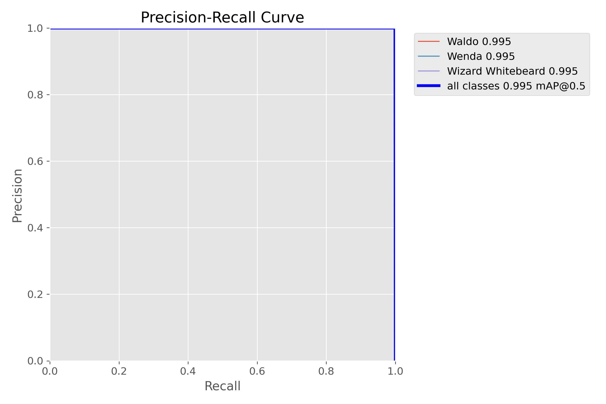
mAP50 reports.
A precision-recall curve is traced by sweeping the confidence threshold from high to low. At a high threshold the model reports only its most certain detections, so precision is high and recall low; lowering it admits more detections, raising recall and eventually costing precision. A curve that stays near the top-right corner means the model finds nearly everything without accumulating false positives, and the area beneath it is the average precision summarized by mAP50.
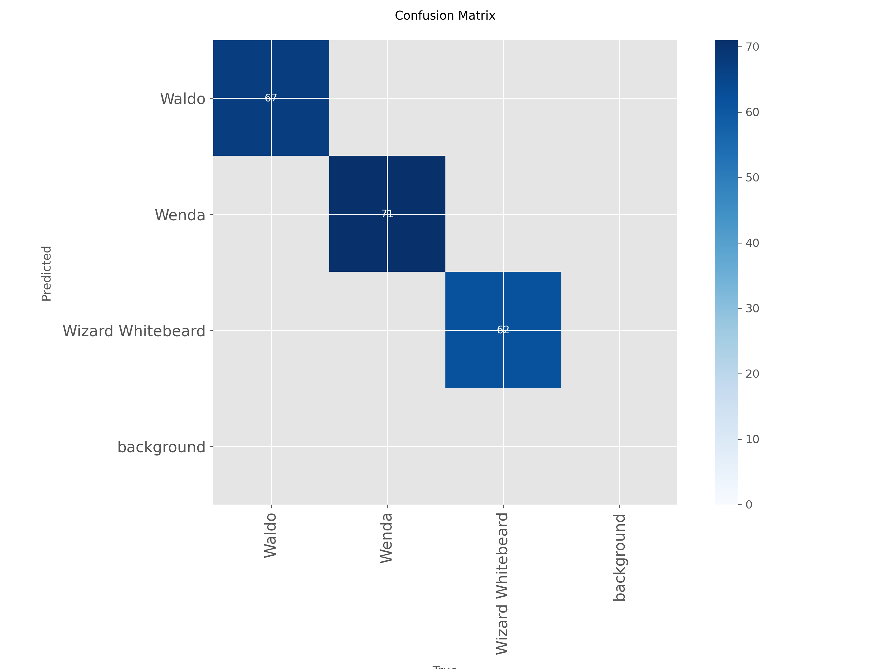
The confusion matrix answers a question the headline metric cannot: which classes get mistaken for which. A single aggregate score hides whether errors are spread evenly or concentrated in one confusable pair, and on a three-class task that distinction is the difference between a uniformly good model and one with a specific blind spot.
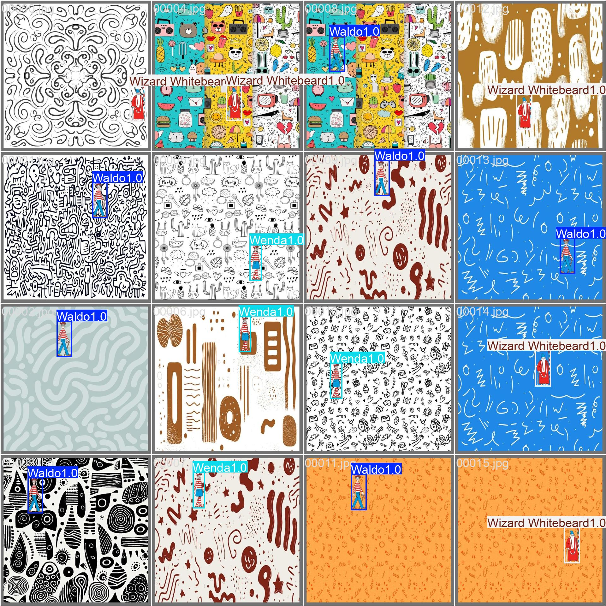
The notebook reports 3,006,233 parameters for the fused YOLO inference model, compared with 13,539,143 in the custom ResNet18 detector. Although these counts come from different model stages, they make one point clear: the custom model’s weaker result is not explained simply by having fewer parameters. Detection architecture, pretraining, augmentation and the longer training budget all differ, and this experiment does not isolate their individual contributions.
YOLO is a much stronger detector on this task. Its near-ceiling scores also describe the task itself: three fixed cut-outs at fixed source sizes, a reused background pool, and exactly one target in every image. A score this close to the ceiling is evidence that the problem sits well inside what a pretrained detector already handles.
What this experiment establishes
The custom model learns useful class and location predictions, but misses the joint criterion on 69 of 200 held-out composites. A pretrained detection architecture fine-tuned on the same files handles this controlled task much more successfully. Low validation loss, correct class labels and visually plausible boxes are each weaker claims than successful detection.
Three experiments would separate model limitations from dataset simplicity, and each has a clear shape. Scoring both models under one shared detection protocol would make their numbers directly comparable. Training 1 × 1 and 3 × 3 pooling under matched settings would price the neck change that this run adopted on reasoning alone. Holding out whole backgrounds, or varying character scale and appearance, would move the question from new placements to new material. Adding empty scenes or multiple targets goes further still: it would require replacing the custom model’s one-box contract with something that can abstain or count.
Evidence behind the discussion
The measurements come from the completed run: the custom test metrics, YOLO test metrics, custom learning history and YOLO learning history. The executed notebook contains the complete implementation and the figures reproduced here. Every number above comes from a single completed 3 × 3 run on that fixed dataset, evaluated once on the held-out split.